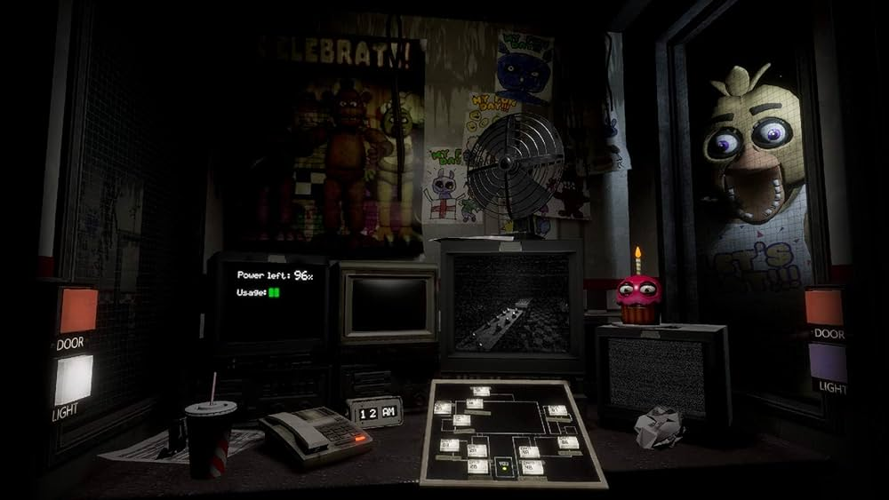

Five Nights at Freddy's Help Wanted é o oitavo jogo de terror da Franquia Five Nights at Freddy's feito por Steel Wool Studios.
Lançado em 28 de maio de 2019, o jogo mais uma vez ganhou popularidade por sua atmosfera assustadora e a inovação com a inserção de realidade virtual.
Five Nights at Freddy's Help Wanted é apresentado como um jogo dentro do universo de FNAF criado pela empresa Fazbear Entertainment na tentativa de limpar sua imagem após os eventos sombrios dos jogos anteriores, que envolvem desaparecimentos e atividades paranormais em suas pizzarias. essa empresa criou "Help Wanted" para transformar essas histórias assustadoras em meras "lendas urbanas" e tentar reconquistar a confiança do público. Como um testador de jogos contratado pela Fazbear Entertainment, o seu trabalho é jogar através de várias simulações de realidade virtual baseadas em eventos nos eventos dos jogos anteriores.
A jogabilidade de Five Nights at Freddy's Help Wanted envolve jogar alguns dos títulos anteriores só que em realidade virtual.
Além de tudo isso também existem algumas "tarefas" a parte, que não fazem parte dos jogos principais, como manutenção de cenário ou de animatrônicos.